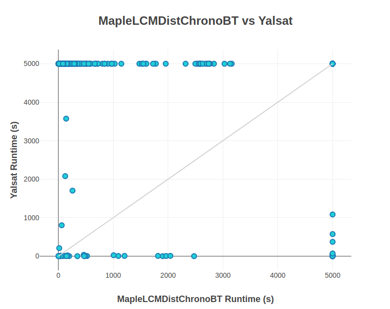

2 Introduction
2.1 Combinatorial Problems
Combinatorial problems are computational tasks that arise in various fields, such as computer science and artificial intelligence (AI), and have a wide range of applications. These tasks mainly involve decision-making in arranging, choosing, or assigning elements and primarily deal with finite sets of objects under specific constraints. There are many NP-complete and NP-hard problems that, when focused on discrete optimization and decision-making within a finite set of objects, fall into the category of combinatorial problems.
For example, one well-known problem in this category is the Traveling Salesman Problem (TSP), which is an optimization problem with the objective of finding the shortest path between a finite set of cities, with the constraint of visiting each city at least once before returning to the starting point. TSP is a classic combinatorial problem, and it is categorized as an NP-hard problem, which means that there is no efficient polynomial-time solution for solving the TSP.
Another well-studied example of a combinatorial problem is the Boolean Satisfiability Problem (SAT), which is a fundamental problem in computational theory. Given a propositional formula, the objective is to determine if there is an assignment of truth values to the variables in the formula that makes the formula true (Hoos and Stützle 2005). Equation [eq:int1] shows a simple propositional formula, and the goal here is to find an assignment of Boolean values to each variable that satisfies the entire formula. Many real-world problems can be transformed into SAT problems, including software testing, software verification, bioinformatics, and various optimization problems. SAT is proved to be NP-complete, which means that while a given solution can be verified in polynomial time, finding a solution is challenging, and no polynomial-time algorithm is known to solve all instances of SAT efficiently.
\[\label{eq:int1} (A \vee B) \wedge (\neg A \vee C) \wedge (B \vee \neg C)\]
2.2 Overview of Algorithm and Portfolio Selection
In the domain of combinatorial problems, such as SAT and TSP, the complexity of the problems means that no single algorithm can solve every problem instance optimally. This concept is aligned with the No Free Lunch Theorem, which states that there is no one-size-fits-all algorithm that excels in solving all problems (Karp 1972). Research on the development and proposal of innovative algorithms for addressing these problems has a long tradition. These include exact algorithms, approximation algorithms, and heuristics, all of which are widely discussed in the literature (Biere et al. 2021).
However, accessibility of a plethora of solvers adds complexity to the problem-solving process, as it makes it difficult to identify the best algorithm for a specific problem. This is because each solver has its unique strengths, weaknesses, and strategies to solve problems. As a result, algorithm performances are often complementary and their performance depends on the characteristics of the instance (Kotthoff 2014), such as the size of the search space and the number of constraints. In other words, within a portfolio of solvers, one solver might solve a particular instance in less than a second, while another could take much longer or even fail within the available time frame.
In addition, relying solely on the single best solver (SBS) to solve all instances, which often outperforms other algorithms on average, is not always the most effective strategy. Although SBS may be optimal for some, it could be a terrible choice for others. This is illustrated by data from the 2018 SAT Competition (see Figure 1.1), where MapleLCMDistChronoBT was the best performing solver on average for all problem instances. Even the worst-performing solver, Yalsat, outperformed the SBS in certain instances. This shows that the solver considered the worst can, at times, surpass the SBS on specific problem instances. Thus, relying on a single solver to address all problems is inefficient, as it wastes both resources and time. In addition, identifying the best solver for each instance is not feasible without a custom selection process.

For decades, one of the most prominent ideas in the combinatorial optimization literature has been the concept of designing a portfolio of solvers (Gomes and Selman 2001; Huberman, Lukose, and Hogg 1997). This approach does not require extensive knowledge in specific domains, algorithm design, or computational complexity. By treating solvers as black boxes, we can incorporate existing solvers into a portfolio without modifying or designing new ones. This approach allows us to include multiple solvers in the portfolio and take advantage of their complementary strengths, which enables the entire portfolio to excel at solving all problem instances. The actual best solver for each instance, known as the Virtual Best Solver (VBS), which is hard to identify, always exists in the portfolio.
There are different strategies for applying these portfolios to solve problems. Algorithm selection is one portfolio approach that has been studied extensively (Kotthoff 2014; Kerschke et al. 2019). Algorithm selection techniques are particularly important in solving combinatorial problems, as it is always challenging to choose the best solver for each instance. Selection is not a new problem, and in professional settings or daily life, we often select strategies and things that best fit the situation at hand. In Algorithm selection method, the goal is to identify the most suitable algorithm based on the characteristics of the problem. To address the algorithm selection problem, most approaches focus on employing machine learning algorithms to select suitable solvers (Bischl et al. 2016). Specifically, by extracting instance features and using a history of algorithm performance data on instances, performance models are trained to predict the best solver.
Despite the significant success of algorithm selection techniques, there is still room for improvement. A common strategy used to do algorithm selection is choosing a single algorithm to solve a problem instance; however, this can increase the risk of selection, as machine learning models may not always generalize well. This means that they can choose an incorrect algorithm that may perform poorly, leading to suboptimal solutions. To mitigate this risk, several studies have shown that employing a more robust strategy, such as dynamically selecting an ensemble of algorithms based on the characteristics of the problem at hand, can be effective (Kadioglu et al. 2011; Xu et al. 2008).
Classic subportfolio selection methods focus on choosing a fixed subportfolio for all instances (Roussel 2012). However, this approach is suboptimal and inefficient, as it overlooks non-dominating algorithms that perform well on specific instances. In contrast, modern subportfolio approaches emphasize the per instance selection of the solvers (Xu et al. 2008; Kadioglu et al. 2011). Here, algorithm selection plays a key role, which allows the system to leverage the strengths of multiple algorithms by dynamically adapting the selection to each problem instance’s specific characteristics. This adaptability reduces the risk associated with selection and ensures that overlooked algorithms in fixed portfolios are utilized when most effective.
Some subportfolio methods focus on running solvers in parallel, while others use a sequential approach. In sequential execution, a selected solver attempts to solve the instance for a portion of the available time. If the instance remains unsolved, another solver is then employed. This approach can be suboptimal if the initial solver is not the best choice. On the other hand, parallel portfolios run multiple solvers simultaneously, stopping the process as soon as one solver successfully solves the instance. The concept of parallel subportfolios has attracted substantial interest in the literature and has shown great potential.
Most proposed parallel subportfolio techniques have shown performance improvements primarily through simulations, without executing the algorithms in parallel in real-world scenarios. The few approaches that have collected actual parallel performance data have often focused on a limited number of solvers. Consequently, there is limited understanding of the overhead associated with running solvers in parallel. This gap indicates that, while the concept is promising, more robust real-world evaluations are needed to fully understand its benefits and assess the true scalability of parallel subportfolios.
Additionally, running too many solvers in parallel can introduce overhead on shared memory architectures due to potential contention for shared resources. Although some publications have mentioned this issue, it has not been empirically examined. Others have also overlooked this overhead, proposing parallel methods without accounting for it.
2.3 Contributions
2.3.1 Comprehensive Empirical Evaluation of Solvers in Parallel
The preliminary focus of this dissertation is on extensive empirical evaluation of algorithms in different types of problem, including SAT, Planning, and MaxSAT. This work assesses their performance on varying numbers of cores to provide insights into how solvers behave when running in parallel. By evaluating the solvers in diverse parallel settings, we are able to quantify the computational overhead introduced when running solvers in parallel on shared memory systems, a critical aspect that has been largely ignored in previous research. The results provide an estimate of how beneficial parallelization is when running black-box solvers in parallel, and examine the trade-offs between solver performance and computational overhead. This insight helps us identify the optimal level of parallelization that maximizes efficiency without causing excessive overhead. These evaluations provided a unique dataset, which is a valuable addition to the algorithm selection community.
2.3.2 Comparison Between Parallel Execution and Algorithm Selection
Another important contribution of this dissertation is the direct comparison between the parallel execution of algorithm portfolios and the traditional algorithm selection approach, where a single solver is selected based on the characteristics of the problem instance. Based on the results of our empirical evaluations, this study analyzed the performance of these two methods. The goal was to determine whether running multiple solvers in parallel can offer a competitive or superior alternative to selecting the best predicted solver for each instance.
Our results indicate that algorithm selection outperforms parallel execution in most cases. This is because the overhead associated with running multiple solvers in parallel —especially when there are many parallel runs — can lead to resource contention (competition for CPU, memory, and other resources) and increased coordination costs on multicore architectures, which often offset the benefits of parallelization. This study is the first in the literature to offer a head-to-head comparison between these two strategies. The superiority of algorithm selection, as shown in our results, suggests that a more selective approach can achieve better performance than running a handful of solvers in parallel.
2.3.3 Development of a Hybrid Subportfolio Selection Approach
Another contribution is the development of a hybrid approach that combines algorithm selection with parallel execution of solvers. Traditional algorithm selection methods choose a single solver based on the predicted performance for a given problem instance, but this can result in poor performance if the prediction is inaccurate. In contrast, our hybrid approach dynamically selects a subportfolio of solvers based on instance-specific features and runs them in parallel. Specifically, the uncertainty of the predictions made by the algorithm selector model is used to make more informed decisions. The size and composition of the subportfolio are dynamically adjusted for each problem instance using this uncertainty measurement. This "happy middle" approach balances the strengths of per-instance algorithm selection with the benefits of parallel execution. This method leads to significant performance improvements compared to the existing subportfolio designs in the literature. In addition, the selection and size of the subportfolio are dynamic and tailored to each instance.
2.3.4 Fairness and Accuracy of Evaluations
A unique aspect of this dissertation is its focus on the fairness and precision of evaluations. In shared-memory systems, existing studies often rely on theoretical models or idealized runtime assumptions when running multiple solvers in parallel. This does not reflect the actual performance of the solver in a parallel setting. However, this work uses actual runtime data collected from solver executions in a consistent hardware environment. This work provides a more realistic and fair comparison between the proposed hybrid approach and the baseline methods.
2.3.5 Variations of the Hybrid Method
Lastly, acknowledging the superiority of the hybrid method proposed in this work, we considered variations of the method for comparison. Initially, the performance model used was a regression random forest with Jackknife uncertainty estimation (Wager, Hastie, and Efron 2014), implemented in the randomForest package in R, based on (Breiman 2001). Another implementation of the random forest algorithm, known for its speed, is Ranger (Wright and Ziegler 2017), which offers two methods for uncertainty estimation: Jackknife and infinitesimal Jackknife. This work compares the initial model with two models using Ranger. In addition, the proposed method initially introduced a metric to account for the likelihood of algorithms based on the distribution of predictions. This is replaced with the Kullback–Leibler (KL) divergence method, which quantifies how distinct algorithms are based on the distribution curves. Lastly, while our prediction model was initially trained on sequential data, we compared the results using a model trained on both sequential and parallel data.
2.4 Organization of Chapters
This dissertation is organized into six chapters, each addressed different aspects of the research problem and contributed to the overall development of the proposed approach. The chapters are organized as follows.
The first chapter offers an introduction to the research topic, highlighting the motivation for the study and clearly defining the research objectives. It also introduces the key contributions of the dissertation and outlines the literature gaps that this work addresses.
The second chapter reviews the existing literature related to the research problem, ranging from early studies in this community to recent, more promising work on subportfolio selection and scheduling. It includes a discussion of previous works in the fields of combinatorial problem solving, algorithm selection, parallel solvers, and both sequential and parallel portfolio designs.
Chapter three focuses on the first two key contributions outlined earlier. Provides a detailed presentation of the results from the empirical evaluation that compares the performance of solvers in both sequential and parallel execution modes, covering problem scenarios such as SAT, Planning, and MaxSAT. Furthermore, the results are compared to the traditional single-algorithm selection method.
Chapter four introduces the novel hybrid approach developed in this dissertation, which combines algorithm selection with parallel execution. It expands data collection to cover more problem types and discusses the formulation of dynamic subportfolios. It also provides details on how uncertainty in predicted performance can assist in selecting solvers based on instance-specific features. The effectiveness of this hybrid approach is demonstrated through a comparative analysis with existing methods and baseline models.
Chapter five provides variations of the proposed approach and compares them with the method introduced in the fourth chapter. Comparisons include different implementations of random forest, replacing the likelihood metric with the KL divergence method, and models trained on sequential and parallel data for a comprehensive analysis.
The final chapter summarizes the key findings and contributions of this dissertation. It also outlines potential directions for future research and acknowledges the limitations of this study, including areas for improvement in algorithm selection techniques and parallel portfolio methods.